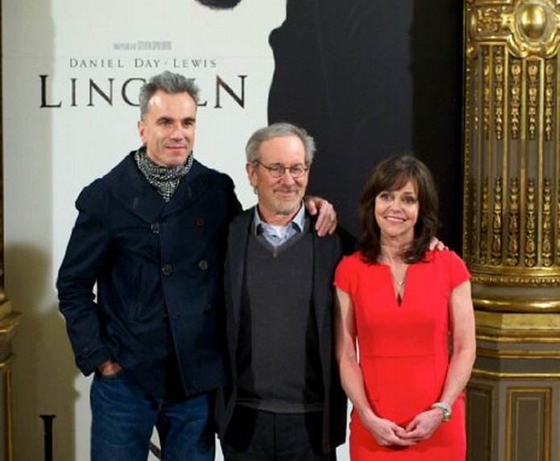
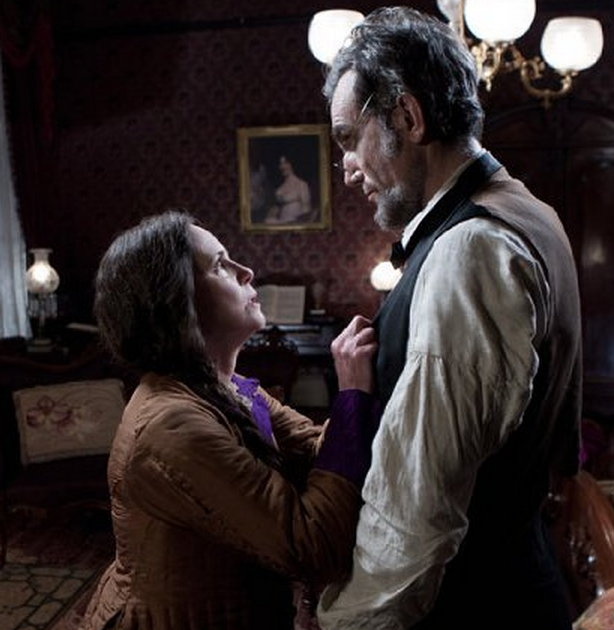

|
In the spring of 2011, Steven Spielberg received a hand-addressed package at his office on
the Universal Studios lot, marked ominously with a skull and crossbones. The director, who
was months from starting production on his next movie, "Lincoln," closed his door, opened
the package and removed an old pocket cassette recorder.
"I literally for 10 minutes was afraid to turn it on, because I expected that whatever
|

Daniel Day-Lewis, Steven Spielberg, and Sally Field
at the premiere of Lincoln
|
I heard on that tape was going to be my film, my entire film," Spielberg said. "I was just
savoring that last little moment ... until I took the tape out and pressed the button, and
that's when Abraham Lincoln spoke to me."
Actually, the voice on the recording belonged to actor Daniel Day-Lewis, who had spent
months perfecting a reedy, Middle American twang for the performance he was about to
deliver as the 16th American president. Lincoln's voice would be crucial to the film -- in
the script, by Pulitzer Prize-winning playwright Tony Kushner, the nation's leader's
extraordinary use of language plays a starring role.
Lincoln covers just four months of the president's life, an intense period in
1865 when he pressed for passage of a constitutional amendment to end slavery as the Civil
War was grinding into its fourth year. Alongside his exertions as a politician, the movie
shows Lincoln as a concerned family man comforting his grieving wife and two sons--he had
lost two of his boys already to illness.
Initially, Day-Lewis said, he was hesitant to take the part, describing himself as
feeling "intimidated" by Lincoln and unmoved by early versions of the script. But it was
the intimate view of the president in Kushner's treatment -- as a man, not a monument --
that ultimately drew in the London-born actor.
"The thing that surprised me from the moment I began to try to move toward an
understanding of Lincoln's life was how accessible he was," Day-Lewis said in an interview
in Beverly Hills in October, with Spielberg and Kushner by his side. "I wasn't prepared
for that. I thought it was going to be tremendously difficult to discover him, the way he
was as a man."
With the film, a very modern Day-Lewis, who has tattooed forearms and spiky gray hair,
has become a kind of quiet advocate for Lincoln's quaintly personal style of
statesmanship.
"Lincoln was blessed with a quality of genuinely being interested in people," Day-Lewis
said. "He didn't have to pretend ... Face to face, people sensed that he was not just
looking at them, he was seeing them."
Though Day-Lewis didn't sign on to the project until 2010, Spielberg had been living
with visions of him playing Lincoln for nine years.
In 2001, Spielberg optioned historian Doris Kearns Goodwin's book Team of Rivals:
The Political Genius of Abraham Lincoln before she even finished researching it.
(Though inspired by the book in its admiring depiction of Lincoln, the movie ultimately
covers a time period that takes up only a few pages of that text.)
The director courted Day-Lewis for the part, then actor Liam Neeson for a spell until
the development stage dragged on and Neeson turned to other projects. Spielberg kept
returning to the reticent Day-Lewis, drawn, he said, by a quality of humanity he saw in
his performances.
Day-Lewis' creation of complex, masculine-but-vulnerable screen characters has earned
him four Oscar nominations: for playing Christy Brown, an Irishman born with cerebral
palsy, in My Left Foot (1989); Gerry Conlon, an Irishman wrongfully convicted of a
bombing, in In the Name of the Father (1993); Bill the Butcher, an Irish American
crime boss, in Gangs of New York (2005); and Daniel Plainview, an irascible
American miner, in There Will Be Blood (2007). (He won for My Left Foot and
There Will Be Blood.)
"In all of his films, even in the most gripping and negative characters like Bill the
Butcher, there was, underneath all of that aggression, a misunderstood compassion,"
Spielberg said. "I just saw a great reservoir of tremendous patience and compassion.
|

Day-Lewis and Field as Abraham and Mary Todd Lincoln
|
Everything I thought I knew about Lincoln, I thought I had found some of that in my
presumptions about Daniel as an actor. And maybe a little bit under that surface, Daniel
as a person."
In 2010, Spielberg and Kushner traveled to Day-Lewis' home in Ireland in a final effort
to persuade him to take the role. When the actor finally assented, it was with the proviso
that he have a year to prepare, immersing himself in Lincoln's life and his words. Through
reading Lincoln's speeches, Day-Lewis said, he found his distinctive speaking voice, which
is informed by reports of the time that Lincoln spoke in a high pitch.
"On any given day, I learned quite a number of pieces of Lincoln's writing, so that I
could live with those every day and speak them every day," Day-Lewis said. "The voice is a
very deep, personal reflection of character in one way or another."
Physically, Day-Lewis, 55, was well-equipped for the part -- he is naturally long and
angular, like Lincoln, who was 6 feet, 4 inches.
"I was already bearded and pretty slim by the time I got to the makeup room," Day-Lewis
said. "Even though the work they did was quite beautiful and took a considerable amount of
time ... nonetheless, the canvas before they worked on it, it wasn't like there was a huge
transformation."
For 53 days in 2011 on the movie's Richmond, Va., set, Spielberg addressed his actors
by their characters' names, including Sally Field as Mary Todd Lincoln, David Strathairn
as Secretary of State William Seward, Tommy Lee Jones as abolitionist Rep. Thaddeus
Stevens and Joseph Gordon-Levitt as Lincoln's son Robert. The historical spirit of the set
fit well with Day-Lewis' natural way of working, in which he often stays in character
throughout a shoot.
"There certainly was a feeling of a time and place that was maintained throughout the

Tommy Lee Jones as Pennsylvania Congressman
Thaddeus Stevens
|
shoot, which wasn't hard," said James Spader, who plays a garrulous lobbyist named W.N.
Bilbo in the film. "Nothing ever felt contrived."
Day-Lewis spoke in his Lincoln voice even when cameras weren't rolling, and his cast
mates developed an affection for his warm, wry version of the president, Spader said. "I
just found him to be lovely from beginning to end. Daniel wasn't playing Mr. Plainview
from There Will Be Blood. Lincoln was a delightful guy, a real raconteur."
Because of the movie's compressed narrative, Lincoln is shown performing the kind of
day-to-day tasks that can't be squeezed into a traditional cradle-to-grave biopic, Kushner
said.
"I got very excited in the early days of filming when Daniel got down on all fours and
started rummaging around in the fireplace," he said. "There was enough time in this movie
... to watch Abraham Lincoln on the floor picking up his kid or changing the logs in the
fire."
For Day-Lewis, it was ultimately an opportunity to bring a human face to a mythic
figure.
"Lincoln felt it was important for people to have ideals which they might aspire to,"
Day-Lewis said. "He believed it was important to have those figures, and he became one
himself, and also a good man that you discover was so much more interesting than the
ideal."
Source: Rebecca Keegan in the Los Angeles Times (November 15, 2012).
|